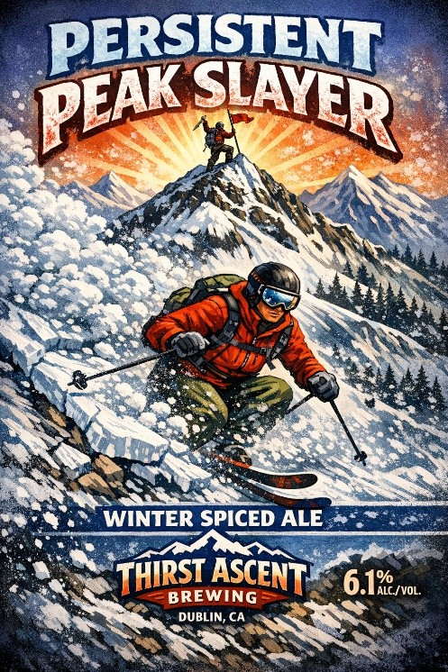
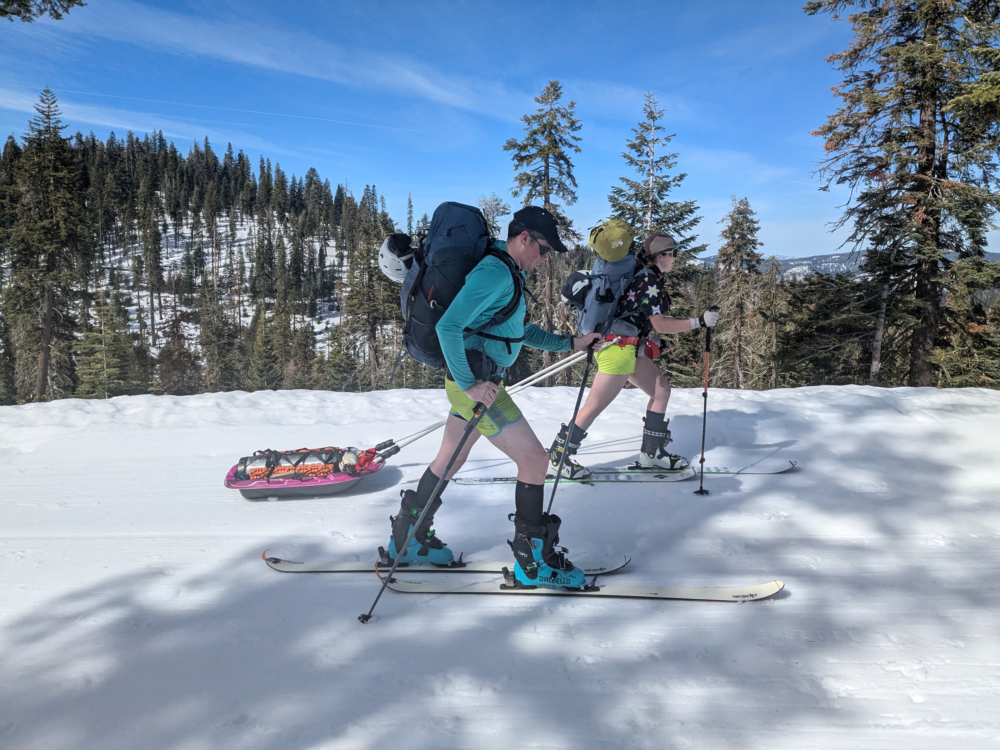

After the disastrous start to the 2024-5 ski season, I was given the option to defer my Ostrander permit to the 2025-6 season (a perk that has since been discontinued.) I was given early access to the hut registration page and picked out a good weekend in late February. For my previous trip to Ostrander, we had prepared a lavish meal and added to the menu wall (and also ended up needing to sleep in a snow cave the second night, but that is another story). I knew that we needed to top it this year.
I have always had a dream of summiting a mountain with a keg, a dream that was finally realized on my bachelor party in 2024, when we skied (most of) a quarter barrel keg up Rubicon Peak, thanks to Nick. Of course, the fact that we had been drinking from said keg all night and on the trail lightened it noticeably, though it was still pretty heavy. I am still a sucker a good keg haul story. So naturally, once I had gathered my Ostrander crew for a planning meeting, my opening bid for this year’s feat was, “we’ll haul a homebrew keg up with us.” A beat of silence followed, and then Emily simply said, “I’ve been meaning to build a pulk sled.” This is one of those cases where either no one thought we were being serious or no one was bold enough to say no, until it was too late.
A still lavish, but somewhat subdued menu plan followed, and of course logistics as well. I was coming off of foot surgery 8 weeks prior, and while I expected to be able to make it, I was worried about fitness and the fact that my last day skiing had been in April of the prior year. My stubbornly healing foot finally made some rapid improvements in the week before, and we were officially on.
For the keg, we selected a winter spiced ale that I had brewed the previous fall. I had intended it as a Christmas beer, but because I had been out of town for most of the holiday season, and was then laid up and not drinking after my surgery, the keg was well and truly full. Of course, a renaming was in order to make the beer more appropriate for the occasion.

Of note, most homebrew setups do not involve the familiar Sankey and picnic tap system with a hand pump. The 5 gal Corny kegs don’t support the Sankey tap, and are generally meant to use CO2 pressure to force the beer out; oxygen from a hand pump will oxidize the beer and turn it “stale”. These setups are meant to serve beer from a home tap for weeks to months, and so keeping oxygen out is paramount. In a future iteration, I may want to configure a lightweight bike pump to interface with the ball lock valve. But for this iteration, this setup meant that in addition to the keg and the picnic tap, I needed to also bring a CO2 tank and a pressure regulator. All together, these extra accessories added another 12 pounds or so to the setup.

The trail to Ostrander comes in two parts. The first is along the Glacier Point Road, which has some gradual ups and downs, but overall loses a few hundred feet over the 4-ish miles. This road is groomed and is popular with cross country skiers. It is also, as it turns out, relatively easy to ski with a sled. The second part departs from the road and climbs substantially, gaining 2500 ft up to the hut. All of a sudden, pulling the keg along the trail was at the very limit of the friction that could be generated by climbing skins. The optimism of the first 4 miles gave way to the daunting task ahead.
I drew the first shift off the road. I clipped on the belt and cautiously skied down the berm off the road, immediately falling and breaking the pulk attachment. So went my first 5 seconds pulling a sled. After some repairs, I started up the hill and quickly felt the strain. After about 100 vertical feet, I was exhausted. After a short rest, I managed perhaps another 200 feet. Jacob gave it a try and could barely even move the sled. It was unspoken, but we all began thinking about whether we could stash the sled and keg and leave it, retrieving it on the way down. Bit by excruciating bit, we continued, 100 feet here and there, not wanting to give up quite yet.
We set up a fairly good system. We had a keg puller, a tag line operator (to keep the sled from rolling down the hill and to contribute some pulling force in the steep sections), and a rabbit. The rabbit’s job was to rush ahead to a pre-designated handoff point and rest. Once the keg made it up to the rabbit, the rabbit would pull the sled, and the former puller would operate the tag line. The tagline operator became the rabbit.
This cycle got us through the first large hill and the flat region in the middle. We opted to leave skins on for the descent from Horizon Ridge due to challenging snow conditions and a desire to take it slow with the keg. There was plenty of falling, some sled repairs, but no permanent damage. From the saddle, the last climb up to Ostrander lake ensued. Emily was the hero of the day, singlehandedly pulling the sled for most of this final climb. Racing darkness, we made it to the hut in a blazing 8 hours.
The other hut visitors were astounded to see us rolling up with a keg, and were thrilled to hear that my intention was to share it. As I put it, there’s no way the 4 of use were going to drink an entire keg, and there was no way we were going to ski down any beer after the ordeal we had gone through hauling it up. Dinner was thankfully quick to heat up- premade coque-au-vin. And it went down well with a nice winter ale (once it stopped pouring foam).
For the tour on our “rest day,” we did a clockwise circumnavigation of Horse Ridge, along with a number of other parties. Conditions were icy; this was a week after the miracle 5-day 100” storm was immediately doused with 10 inches of rain. The steep final section to gain the ridge initially looked like it would be a great section to lap, but after watching some very good skiers have a few iffy turns up top, I decided that this was probably not the right run to have my first turns in 10 months.
Instead, we continued along the ridge, eventually transitioning to ski mode in the softening snow. Wet loose was a concern for the afternoon, so we found some mellow slopes to play on, and a good time was had. Dinner was a delicious paella dreamed up by Devin, and we partook in more keg beer, which regrettably kicked much too early in the evening.
The next day we skied out. Not wanting to ski down with a sled, we strapped the sled to Emily’s backpack and I hooked the keg underneath the top strap of my pack. Jacob took the CO2 cylinder. The snow conditions were terrible, and Emily took a scary fall, tweaking her knee but ultimately able to keep skiing after a break. As always, the skin out was a complete slog. For how mellow Glacier Point Road is, that 4.5 miles of slight uphill at the end of a trip always seems to hurt more than it has any right to. Poor Devin and Jacob were nursing some terrible blister, and would later end up losing some toenails.
We trickled back to the parking lot a bit after 2pm, and after some cached Pliny the Elder and jalapeno chips were restored enough to head home.
I have certainly heard tales of people hauling up wildly impractical items up to Ostrander (bottles of wine, mini grills, even flats of beer). I think the juxtaposition of the remote location with a lavish addition is a great way to make the trip memorable. I suspect we may not be the first to haul a keg up to Ostrander, but at least the last several years of the guestbook contain no such mentions. We have “officially” marked our achievement in the guestbook and on the menu wall. Hauling “only” a 5 gallon keg does feel a bit like cheating, but I’m not sure we could have managed any more than that, given the extra weight of the CO2 tank and regulator.
So while it's unclear if this was the First Keg Ascent, it was certainly an excellent Thirst Ascent.